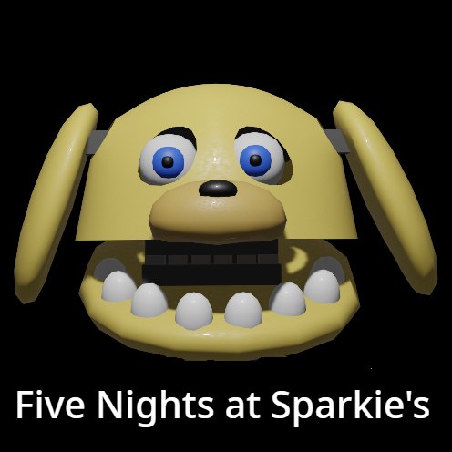
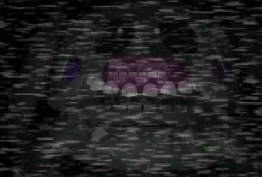
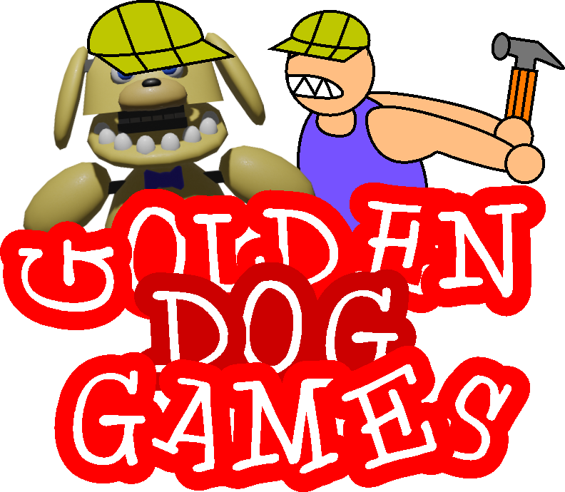

TheGoldenDog

Hi! I am TheGoldenDog, I am a young indie game devaloper on Gamejolt.
I am also a FNaF fangame creator with my game series "Five Nights at Sparkie's".
What games have I made?
I have made several games like Five Nights at Sparkie's 1 to 4, Project: Sparkie, Sparkie Robotics, Benson in Space 2, and Five Nights at Sparkie's Finally.
Also, I have made the Wild Guy series, as well as several miscellaneous games such as Pinecone Simulator.

What game engine do I use?
I use the free online block-based game engine called Scratch, specificly the Scratch mod Turbowarp, wich supports wide screen and other features.
What is going to happen to Five Nights at Sparkie's?
I had a big break between Benson in Space 2, (FNaS 8) and Five Nights at Sparkie's Finally. I do have a couple of ideas for the next game, involving a new model 2D glitchy model of Sparkie, and a FNaF 1 style gameplay.
The game will have quite a bit of lore increments, but I am still thinking about the game, though I have not started coding yet.
What is going to happen to Wild Guy?
I have no ideas for Wild Guy, because the game series has already been finished.
What was my first fangame?
My first ever fan "game" was a really crappy game called "FNaF in Scratch and it was really bad.
Eventually, I scrapped the idea and made a game about Gerald the guy you play as in Pinecone Simulator.
